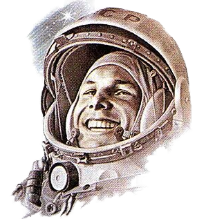

Юрий Гагарин
Первый человек в мировой истории, совершивший полёт в космическое пространство.
Читать →
От первых многомоторных самолётов до первых спутников и полётов к звёздам.
Начать путешествиеПервый человек в мировой истории, совершивший полёт в космическое пространство.
Читать →Главный конструктор ракетно-космических систем, отец советской космонавтики.
Читать →Легендарный лётчик-испытатель, совершивший первый беспосадочный перелёт через Северный полюс.
Читать →Авиаконструктор, создавший легендарные истребители и бомбардировщики марки «Су».
Читать →